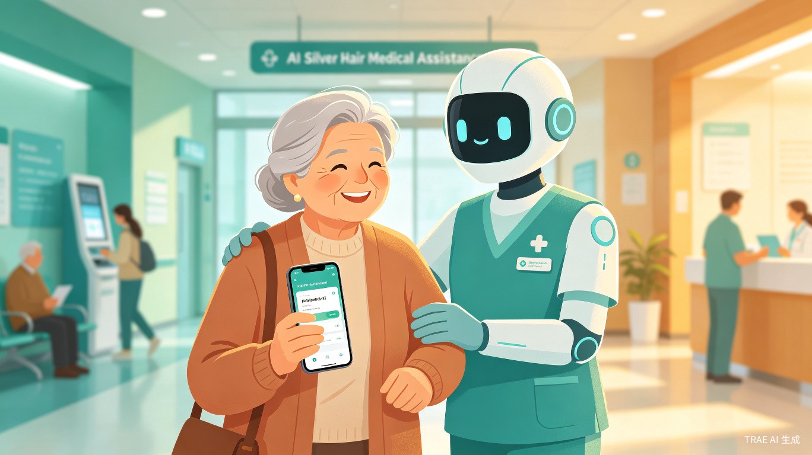

一站式老年就医帮扶服务平台 —— 用AI温暖每一段就医路，让独居老人不再"看病难"
本创意旨在依托人工智能技术，整合医院、社区义工、专业陪护、家庭医生等社会医疗与公益资源，搭建专为老年群体定制的一站式就医帮扶平台。聚焦独居、空巢、子女异地居住老人的就医难题，打通线上智能服务与线下人工帮扶通道，全方位覆盖老人就医全流程，同时激活银发健康服务产业活力，创造全新就业岗位，实现公益帮扶与产业发展双向赋能。
我国老龄化程度持续加深，大量独居、空巢老人存在就医难问题——不懂线上挂号、看不懂医疗单据、就医无人陪同、慢病无人监护，数字鸿沟与照护缺口严重影响老年群体就医体验与健康保障。
众多老年群体因不会操作智能设备、无人陪同，小病拖延、大病慌乱。同时社会闲置公益人力、专业陪护资源未得到有效整合，存在巨大的服务缺口与资源浪费，因此萌生用AI赋能整合资源、破解老年就医困境的想法。
一款整合AI智能服务与线下人工帮扶的微信小程序，适配老年人简易操作模式，联动社区、医院、第三方服务机构搭建一体化助医服务系统。
以"科技助老、公益暖心"为理念，打造从预约挂号、智能导诊、陪护匹配到康复跟踪的全链路就医帮扶闭环，让每一位老年人都能获得有尊严、有温度的就医体验。
三大核心用户群体，覆盖就医帮扶全链路参与方
老人难以操作医院线上挂号、缴费、预约设备，往返医院耗时费力
看不懂专业病历、检查报告和用药说明，容易出现用药错误
独自就医无人引导、排队繁琐，突发身体不适无人协助
社会助医、陪护资源分散，供需匹配效率极低，无法精准对接老人需求
八大核心功能模块，覆盖老年就医全生命周期
语音交互式问诊，老人只需口述症状，AI自动推荐科室与医生，支持方言识别与大字体显示
简化版预约流程，子女远程代操作，支持医保在线支付与线下扫码缴费
AI算法智能匹配社区义工、专业陪护人员，实时定位、服务评价、一键呼叫
OCR识别化验单、检查报告，AI生成通俗易懂的解读并推送语音播报
智能药盒提醒、药物相互作用检测、用药记录追踪，子女端实时同步
一键SOS报警，自动定位并联系家属、社区、120，同步推送老人健康档案
自动聚合电子病历、体检数据、用药记录，生成可视化健康趋势报告
AI康复计划定制、远程视频随访、异常指标预警，衔接出院后全程管理
从需求发起至康复跟踪，AI+人工全程护航
flowchart TD
A[👴 老人/子女发起就医需求] --> B{AI需求分析}
B -->|常规就医| C[智能导诊推荐]
B -->|紧急情况| D[一键SOS急救]
B -->|康复随访| E[康复计划推送]
C --> F[AI自动挂号+缴费]
C --> G{是否需要陪同?}
G -->|是| H[陪护智能匹配]
G -->|否| I[在线就医指导]
H --> J[线下陪护就医]
J --> K[AI实时翻译/解读]
K --> L[检查报告自动解读]
L --> M[用药指导与提醒]
D --> N[自动定位+120联动]
N --> O[家属+社区同步通知]
O --> P[急诊绿色通道]
E --> Q[AI康复计划跟踪]
Q --> R[远程随访/异常预警]
R --> S[健康档案更新]
M --> T[(📊 个人健康档案)]
S --> T
P --> T
T -->|数据反哺| A
三大价值维度，实现社会效益与经济效益双赢
精准填补老龄化背景下老年就医服务的民生缺口，破解老年人数字就医鸿沟，切实保障独居、空巢老人的就医权益，减少老人因病拖延、就医受骗、用药失误等问题，提升老年群体的幸福感与安全感。同时盘活社区义工、专业陪护、医疗辅助等社会资源，完善社会养老医疗服务体系，助力积极老龄化社会建设。
依托银发健康刚需市场，打造全新的AI+养老医疗服务新业态，带动老年助医陪护、健康管理、线上医疗咨询等上下游产业发展。平台可孵化大量线下助医专员、陪护服务、健康顾问等就业岗位，吸纳闲置劳动力、社区失业人员、医护辅助人员就业，拓宽就业渠道，激活银发经济新增长点。
通过AI智能算法快速匹配老人就医需求与各类服务资源，替代繁琐的人工咨询、预约、解读工作，大幅缩短老人就医流程耗时。同时整合碎片化社会医疗服务资源，解决供需信息不对称问题，提升医疗辅助资源的利用效率，减轻医院基础服务压力，优化基层医疗服务运转效率。
老龄化趋势与银发健康服务市场前景
未来，AI银发助医将持续深化AI能力，拓展与更多医疗机构、社区服务中心、养老机构的合作，打造覆盖全国的老年就医帮扶网络。我们期待通过技术赋能+公益驱动的创新模式，让每一位老人都能在数字化时代享有公平、便捷、有温度的医疗服务，真正实现"老有所医、老有所依"的社会愿景。